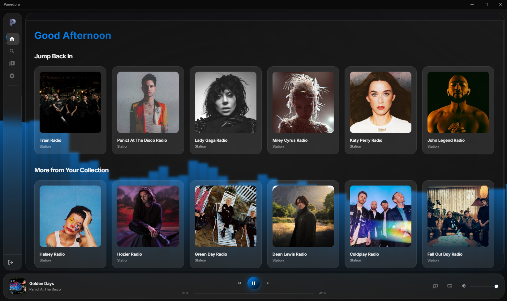
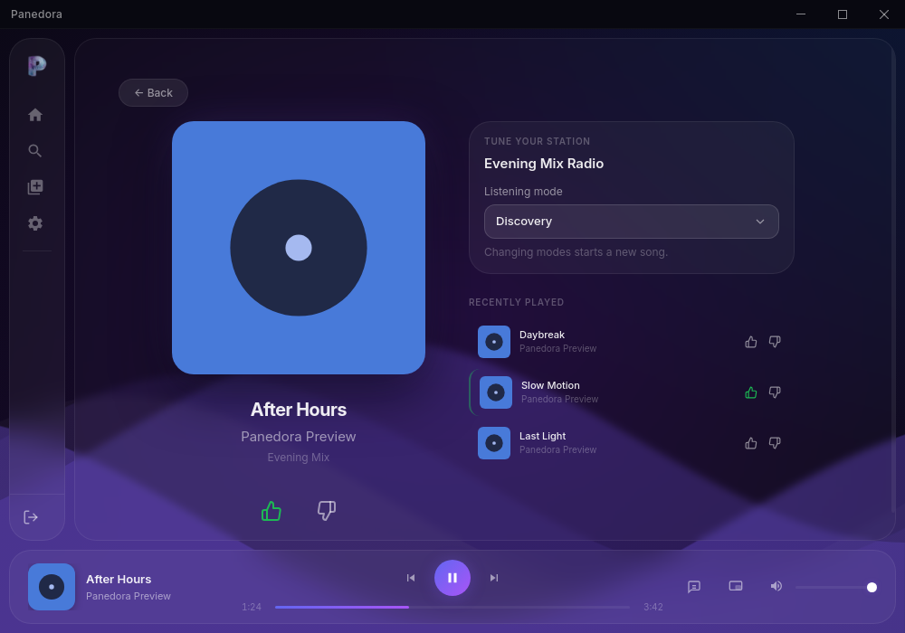
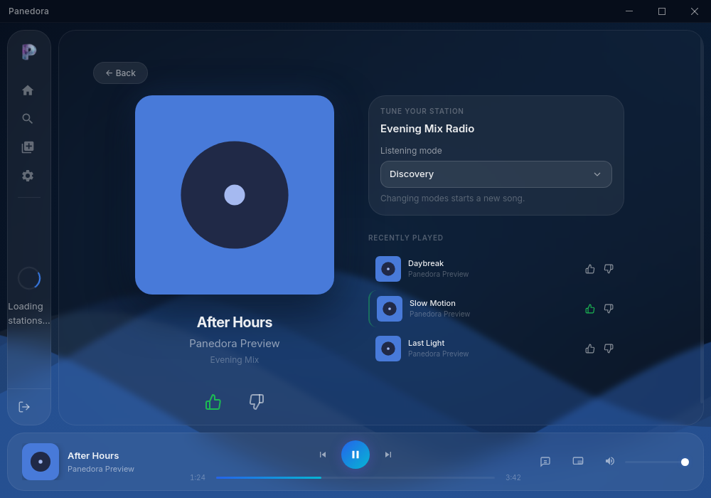
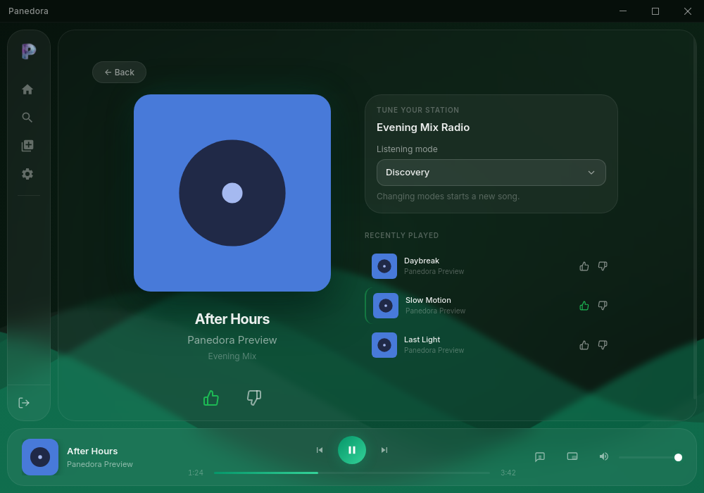

Tune Your Station
Switch to available Pandora modes like Discovery or Deep Cuts from Now Playing.
Station tuning Discord Rich Presence
Listen to your stations, keep a mini-player above your other windows, and follow along with lyrics.
Windows, macOS & Linux. Pandora Plus or Premium required.
An unofficial client, not affiliated with Pandora.

Mini-players
Keep the music above your other windows with the compact bar. The classic layout preview adds a bigger cover and your recently played songs.
Just the essentials, with room left for everything else on your screen.
More room for the artwork, plus a recently played view. Shown from the current development build.
Mini-player previews use sample song details.
Discord Rich Presence
Show the song, artist, album artwork, and playback progress in your Discord listening activity.
Sharing is off by default. Turn it on in Panedora’s Discord settings, with the Discord desktop app running and activity sharing enabled.
Features
Choose your colors, follow the lyrics, and adjust your station’s mix.
Three of Panedora’s built-in themes, shown in the same player view.



App previews use sample song details. Adaptive can also choose colors from your album artwork.
Switch to available Pandora modes like Discovery or Deep Cuts from Now Playing.
Shape your stations as you listen, and see your feedback alongside recently played songs.
Follow the current song, with line highlighting when synchronized lyrics are available.
Choose a color theme, or let Adaptive pick colors from the album artwork. Add waves, particles, or a background that reacts to the music.
About Panedora
Panedora is an independent project by Mitchell Brovarnik. It brings Pandora station listening into a desktop app, with themes, lyrics, mini-players, and optional Discord sharing.
The source is available on GitHub, along with release notes, discussions, and a place to report issues or suggest improvements.
Visit the projectPrivacy
The app signs in directly with Pandora. Panedora does not run a separate server that receives your credentials.
Saved credentials are encrypted locally using your operating system’s secure storage when available, with an app encryption fallback. Authentication data is cleared when you sign out.
Lyrics use LRCLIB, which receives the song title and artist. Update checks and this website’s download links use GitHub. Those services receive network information such as your IP address, but not your Pandora credentials.
If you enable Discord sharing, listening details and the artwork URL go to your local Discord client for display on your profile. Pandora credentials, session tokens, and audio URLs are never included.
Get Panedora
Requires Pandora Plus or Premium. Free Pandora accounts are not supported yet.
Song search starts a station based on the selected track. Exact song playback is not supported yet, including on Premium accounts.
SmartScreen may show “Windows protected your PC” because the app does not have a code signing certificate. If you have downloaded Panedora from this project and choose to install it, select “More info,” then “Run anyway.” The source is available on GitHub.
If macOS says “Panedora is damaged and can’t be opened,” open Terminal and run xattr -cr ~/Downloads/YOUR_FILE.dmg, replacing YOUR_FILE.dmg with the downloaded file’s name, then reopen the .dmg.
If you see “unidentified developer,” right-click the app, choose “Open,” then “Open” again.